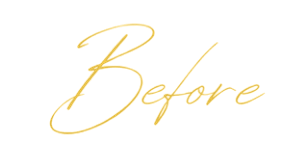
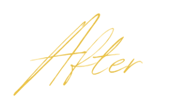

<!DOCTYPE html>
<html>
<head>
<meta charset="utf-8">
<title>Before and After — Black and Gold Stack</title>
<style>
  @font-face { font-family:'Jost'; src:url('fonts/Jost.ttf'); }

  *{margin:0;padding:0;box-sizing:border-box;}
  body{background:#888;}
  .slide{
    width:1080px;height:1350px;position:relative;overflow:hidden;
    background:#000;font-family:'Jost',sans-serif;
  }

  /* Geometry is measured off the reference the user sent: halves split by a
     10px black seam at y=671-681. */
  .half{position:absolute;left:0;right:0;overflow:hidden;}
  .half.top{top:0;height:671px;}
  .half.bottom{top:681px;height:669px;}

  /* Photos come in on black already (enhance-photo.py --black-bg), so they are
     simply placed: x/y is the photo's top left inside its half, w its width. */
  .shot{position:absolute;display:block;}
  .fade::after{
    content:'';position:absolute;inset:0;
    background:linear-gradient(90deg,#000 0%,rgba(0,0,0,.85) 8%,rgba(0,0,0,.35) 20%,rgba(0,0,0,0) 34%);
  }

  /* The lettering is lifted from the reference itself, so the script, the size
     and the gold are the same as the reference, not a font that resembles it.
     Positions are where the reference has them. */
  .word{position:absolute;left:0;width:300px;}
  .word.before{top:300px;}
  .word.after{top:1025px;}

  /* LB monogram inverted to white, same box as the reference's logo. */
  .logo{position:absolute;top:27px;left:34px;width:104px;filter:brightness(0) invert(1);}

  .disclaimer{
    position:absolute;right:28px;bottom:20px;
    font-size:15px;letter-spacing:.22em;text-transform:uppercase;
    color:rgba(255,255,255,.55);font-weight:300;
  }
</style>
</head>
<body>
<div id="stage"></div>

<script>
/* One card per pair. Photos are made by
     python3 design/enhance-photo.py BEFORE AFTER --name <pair> --trim --black-bg
   (same cleanup on both frames, no retouching).

   Per photo: x, y = top left inside its half, w = display width in px. Keep
   the two photos at the same scale as each other so the lips compare
   honestly, and move x/y to line the lip tips up. fade:true adds a black fade
   on the left edge for a photo that still has a backdrop. */
const P = 'photos/before-after/';
const SLIDES = [
  { /* 1 — lip filler, profile. Both at 0.85 of source scale (730 and 1076px
         wide sources), so the lips compare like for like; lip tips lined up
         at x~480, chin in frame on both. */
    before:{ src:P+'lips-profile-before.jpg', x:462, y:0,   w:620 },
    after: { src:P+'lips-profile-after.jpg',  x:297, y:-20, w:915 },
    disclaimer:false },
];

const n = parseInt(new URLSearchParams(location.search).get('slide') || '1', 10);
const s = SLIDES[n - 1];

const shot = p => `<div class="shot${p.fade ? ' fade' : ''}"
  style="left:${p.x}px;top:${p.y}px;width:${p.w}px"></div>`;

document.getElementById('stage').innerHTML = `
<div class="slide">
  <div class="half top">${shot(s.before)}</div>
  <div class="half bottom">${shot(s.after)}</div>
  
  
  
  ${s.disclaimer === false ? '' :
    '<div class="disclaimer">Individual results vary</div>'}
</div>`;
</script>
</body>
</html>
